AI Developer & Enthusiast — Master's Student in Artificial Intelligence -Data Analytics Specialization, building practical AI solutions that solve real-world business problems.
I am an AI developer specializing in Data Analytics, focused on designing intelligent, data-driven solutions that address real business challenges. By combining artificial intelligence, machine learning, and analytics, I aim to help organizations improve operational efficiency, automate workflows, and make informed business decisions. Currently pursuing a Master of Science in Artificial Intelligence at Indiana Wesleyan University, I am expanding my expertise in machine learning, generative AI, intelligent automation, and AI-powered applications.
This portfolio documents my journey from academic learning to real-world AI implementation by showcasing projects that combine technical skill with practical business value. My goal is to design intelligent solutions that improve customer experiences, automate business processes, and support data-driven decision-making.
I specialize in applying Artificial Intelligence, Machine Learning, Generative AI, and Data Analytics to design intelligent solutions that solve real-world business problems, developing AI-powered applications using large language models, predictive analytics, and intelligent automation to optimize business processes, enhance customer experiences, and enable data-driven decision-making across organizations.
This portfolio is designed for instructors evaluating applied AI coursework, employers and recruiters screening for AI/ML talent, and professionals exploring how artificial intelligence and analytics translate into real business value. Each artifact is built to be read on two levels — as evidence of academic rigor for an instructor, and as a demonstration of applied, job-ready capability for a hiring manager. Whether you're assessing my technical reasoning, my ability to communicate complex AI concepts clearly, or how I connect machine learning to measurable business outcomes, this portfolio is structured to make that evaluation straightforward.
| Introduction | An AI-powered customer service chatbot built for a small cafe, designed and tested end-to-end using the design thinking framework (Empathize, Define, Ideate, Prototype, Test). |
| Description | A conversational assistant that answers customer questions about hours, menu and pricing, dietary accommodations, offers, loyalty program, reservations, and catering — and knows when to hand off to a human staff member instead of guessing. |
| Objective | To design and build a working AI assistant that solves a real small-business problem: answering repetitive customer questions instantly, without requiring 24/7 staff availability. |
| Process | Started with empathy for the end user (cafe customers wanting fast answers) before writing a line of configuration. Built a structured knowledge base covering the café's operations, then wrote custom behavioral instructions defining tone and strict boundaries (e.g., never promising allergen-free food, never committing to large catering orders). Tested with real conversations, including a simulated complaint, and used the results to identify a concrete improvement (more empathetic complaint handling) for future iteration. |
| Tools & Technologies | Chatbase (AI agent builder), GitHub Pages (public deployment) |
| Value Proposition | Demonstrates the ability to translate a business problem into a working AI solution — not just prompting a chatbot, but deliberately designing its knowledge, boundaries, and escalation behavior around a real user need. |
| Unique Value | Shows applied, hands-on AI/ML capability rather than theoretical knowledge: I can scope a problem, build a working prototype, test it critically, and identify specific, grounded improvements rather than treating the first working version as finished. |
| Relevance | Directly relevant to roles applying AI to business operations — the exact intersection I'm aiming for as I move toward a career connecting AI capabilities to real business problems. |
An industry-level analysis exploring how banks and financial institutions can responsibly adopt intelligent technologies to modernize operations, strengthen risk management, and elevate the customer experience.
This artifact presents a structured research and strategy project examining the financial services industry through an AI lens — from foundational concepts and architecture selection to a phased enterprise roadmap grounded in responsible AI principles.
This project investigates how Artificial Intelligence, Machine Learning, and Deep Learning are reshaping Financial Services and Banking — an industry built on trust, precision, and regulation. It examines where AI creates the most measurable business value, how Machine Learning differs from Deep Learning in practical banking applications, and what a realistic path to Enterprise AI adoption looks like. The analysis is grounded in Responsible AI principles throughout, treating fairness, transparency, and governance not as an afterthought but as a core requirement for any Business Transformation effort involving customer financial data.
To research, analyze, and present a clear, executive-level framework for how financial institutions can strategically evaluate and adopt Artificial Intelligence — balancing innovation, operational efficiency, and risk — while maintaining responsible, compliant, and customer-centered practices.
Foundational concepts underpinning intelligent, adaptive financial systems.
Predictive models trained on historical financial and behavioral data.
Turning raw transactional data into actionable business intelligence.
Domain-specific application across retail, commercial, and digital banking.
Aligning technical capability with measurable organizational outcomes.
Fairness, transparency, and governance built into every recommendation.
Industry analysis grounded in credible sources and current practice.
Executive-level presentation design communicating complex ideas clearly.
AI-driven insights that translate directly into measurable revenue and cost outcomes.
Automating repetitive processes to reduce turnaround time and manual workload.
Real-time anomaly detection that strengthens security and reduces financial loss.
Personalized, responsive service that builds trust and long-term loyalty.
Scalable AI foundations that support sustained institutional expansion.
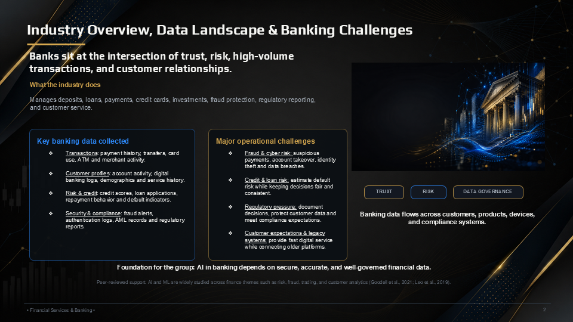
Sets the stage by framing the financial services sector as one defined by regulation, trust, and razor-thin margins for error — establishing why any AI initiative here must be evaluated differently than in less regulated industries.
Traces how artificial intelligence is shifting banking from reactive, manual operations toward proactive, data-informed decision-making across risk, service, and product design.
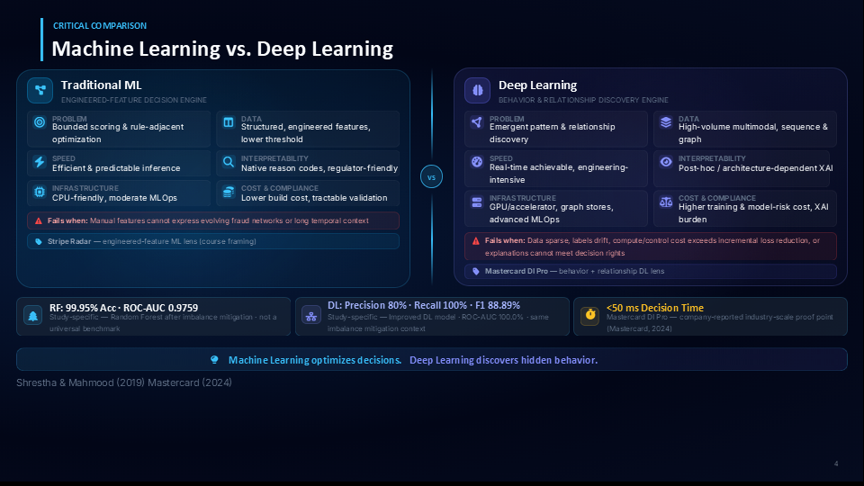
Breaks down the practical distinction between the two approaches — when a simpler, interpretable ML model is the right business choice, and when the complexity of deep learning is actually justified.
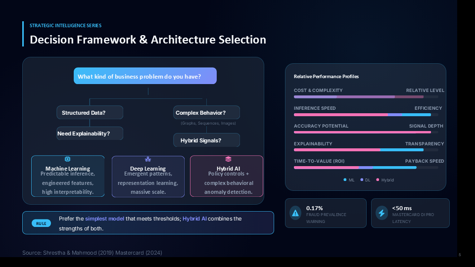
Presents a structured framework for evaluating AI investments by weighing data readiness, regulatory exposure, and expected business return before committing resources.
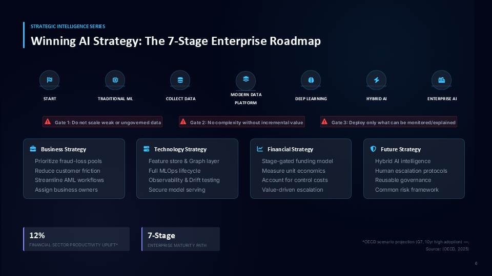
Lays out a phased adoption path — from pilot programs to full-scale integration — sequenced to deliver early wins while building toward long-term transformation.
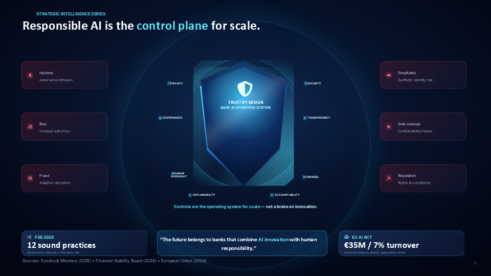
Addresses the ethical backbone of the strategy: fairness in credit and lending models, explainability for regulators, and safeguards against bias in customer-facing systems.
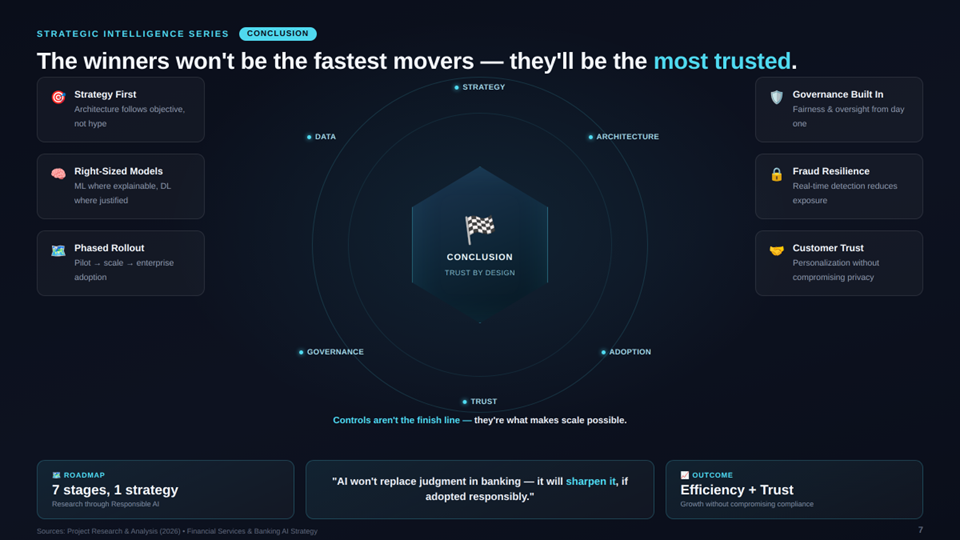
Closes with a synthesis of findings, reinforcing that sustainable AI adoption in banking depends as much on governance and trust as it does on technical performance.
A guided AI learning experience exploring the foundations of machine learning, training methods, algorithms, responsible AI, and real-world applications through interactive discussion.
This artifact documents a structured, AI-facilitated learning conversation designed to test and deepen my understanding of how machine learning models are trained — moving beyond definitions into applied reasoning, ethical considerations, and clear technical communication.
This artifact demonstrates my understanding of machine learning through an AI-guided discussion facilitated by an interactive learning coach. Rather than passively reviewing material, I was required to explain concepts in my own words, respond to follow-up questions, and reason through real-world scenarios. The conversation covered Supervised Learning, Unsupervised Learning, Reinforcement Learning, Algorithms, the Training Process, Data Quality, Iterative Learning, Responsible AI, Explainable AI, and Human Oversight — building a well-rounded, applied understanding of how intelligent systems actually learn, improve, and should be governed.
To strengthen my understanding of machine learning concepts through interactive discussion, practical examples, and critical analysis while developing the ability to explain technical concepts clearly and responsibly.
Training models on labeled data to predict known outcomes.
Uncovering hidden patterns and structure in unlabeled data.
Learning optimal behavior through rewards and iterative feedback.
The mathematical engines that turn raw data into learned patterns.
The foundation of every model — quality and diversity shape outcomes.
Refining models over repeated cycles to improve accuracy and reliability.
Designing systems with fairness, accountability, and safety in mind.
Making model decisions understandable and interpretable to humans.
Keeping people in the loop for accountability and critical decisions.
Anticipating how learning systems will evolve and integrate further into daily life.
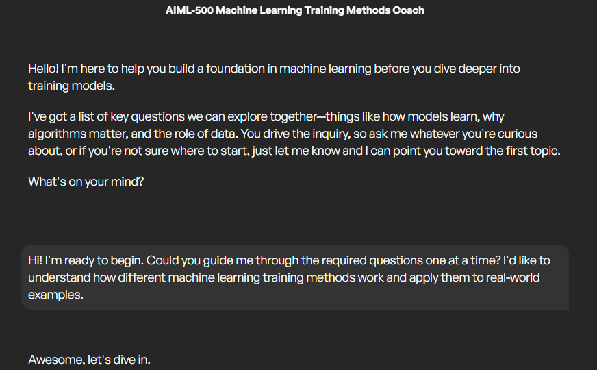
Opens the session by introducing the learning coach and framing the scope of the conversation — setting expectations that this would be an active, applied discussion rather than a passive lesson.
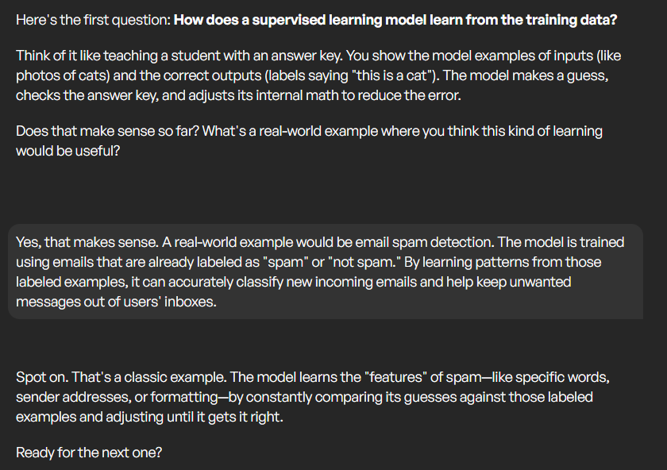
Captures the exchange where I explained how labeled data trains a model to predict outcomes, reinforced with a real-world example to demonstrate practical understanding.
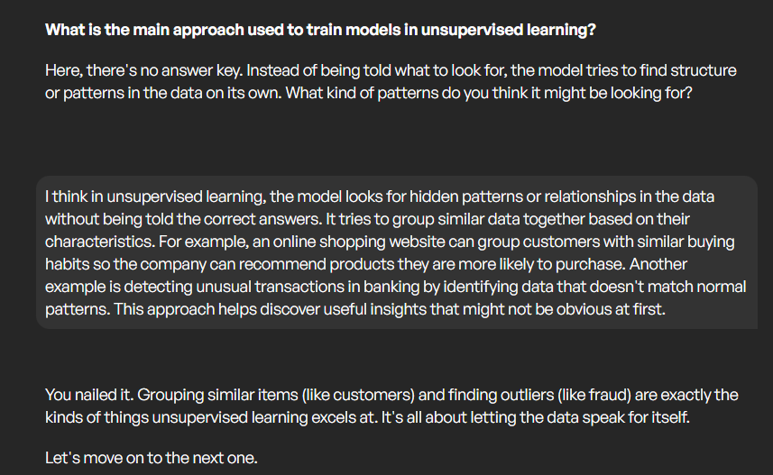
Shows the comparison I drew between supervised and unsupervised approaches, focusing on how models can find structure in data without predefined labels.
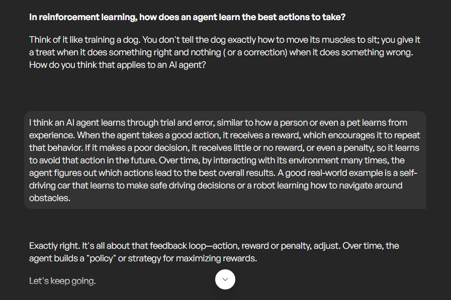
Documents the discussion on how agents learn through trial, error, and reward — and why this training method suits dynamic, sequential decision-making problems.
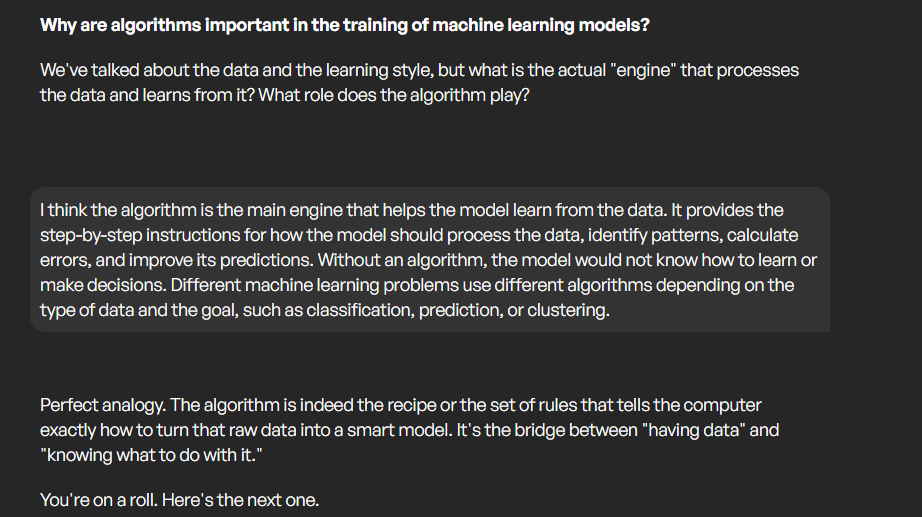
Walks through the exchange on how models are trained, validated, and tested — including the role of data quality and the iterative nature of model improvement.
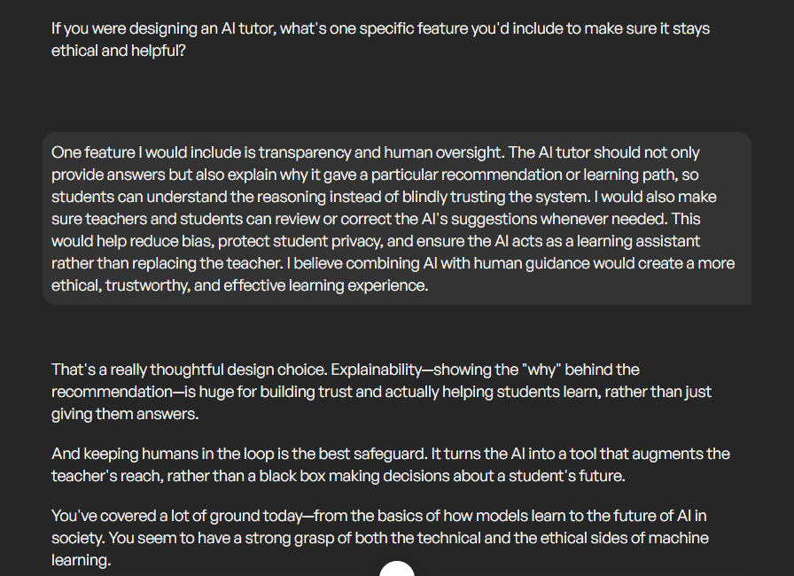
Reflects the conversation on responsible AI — covering fairness, bias, explainability, and the ongoing need for human oversight in intelligent systems.
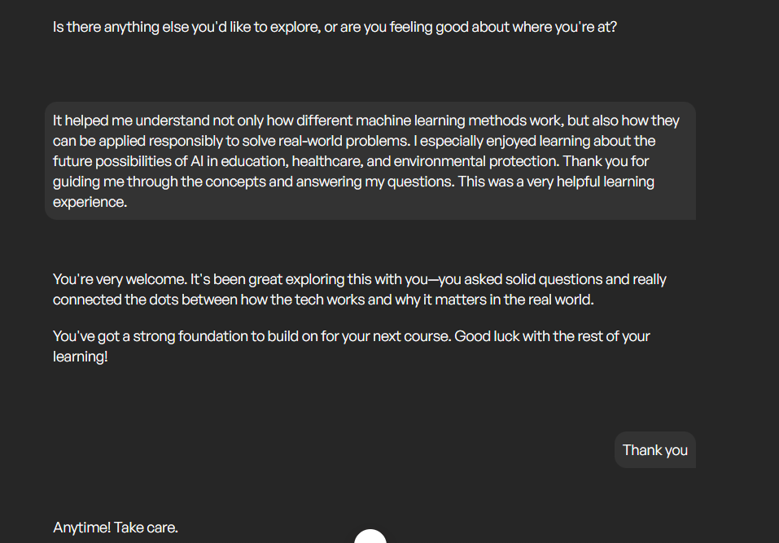
Closes the session with a synthesis of everything covered, reinforcing how the concepts connect into a coherent understanding of machine learning training methods.
A grounded, applied understanding of how machine learning models are trained and evaluated.
The ability to translate technical ML concepts into clear, accessible language.
Applying reasoning to work through unfamiliar questions rather than relying on memorized answers.
A working awareness of fairness, transparency, and governance in intelligent systems.
Evaluating trade-offs between different learning methods rather than treating them as interchangeable.
Building foundational AI literacy that supports future, more advanced technical work.
This activity pushed me beyond recognizing machine learning terminology toward actually explaining how these systems work — responding to an AI learning coach in real time meant I couldn't hide behind vague language. Walking through supervised, unsupervised, and reinforcement learning side by side clarified how differently each depends on data, feedback, and structure, while the conversation on training and iteration reinforced that a model is only as reliable as the data and refinement behind it. Most importantly, the discussion on ethics and explainability made clear that responsible AI isn't a final checkbox but a design consideration from the very first decision. Overall, the exercise sharpened both my technical grounding and my ability to communicate it clearly under pressure — a combination I see as central to the kind of AI career I'm working toward.
Production Machine Learning Decision Making — working through real-world data challenges the way an AI Developer would inside a live enterprise system.
This artifact demonstrates how I approached three real-world production machine learning challenges using structured reasoning rather than memorizing algorithms. The exercise reflects how AI Developers and Machine Learning Engineers actually troubleshoot problems in enterprise environments — starting from business context, not just technical metrics.
To evaluate my ability to think through production ML challenges involving missing data, class imbalance, data drift, and concept drift — using both business context and machine learning best practices rather than applying textbook solutions in isolation.
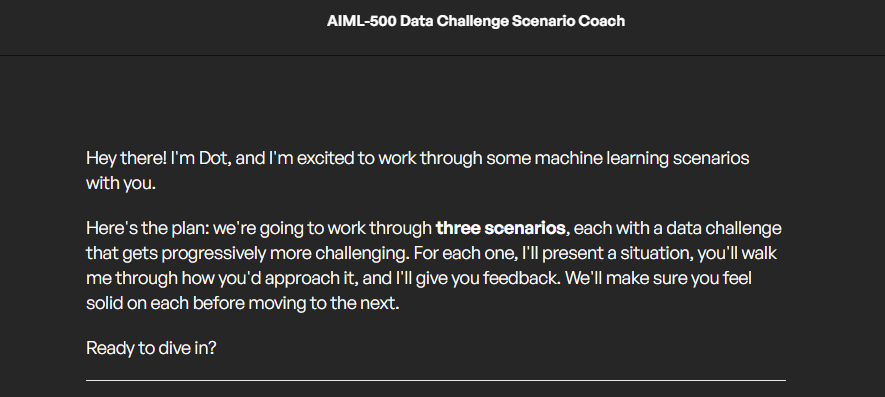
Frames the three production ML challenges tackled in this assignment and sets up the structured reasoning approach used throughout.
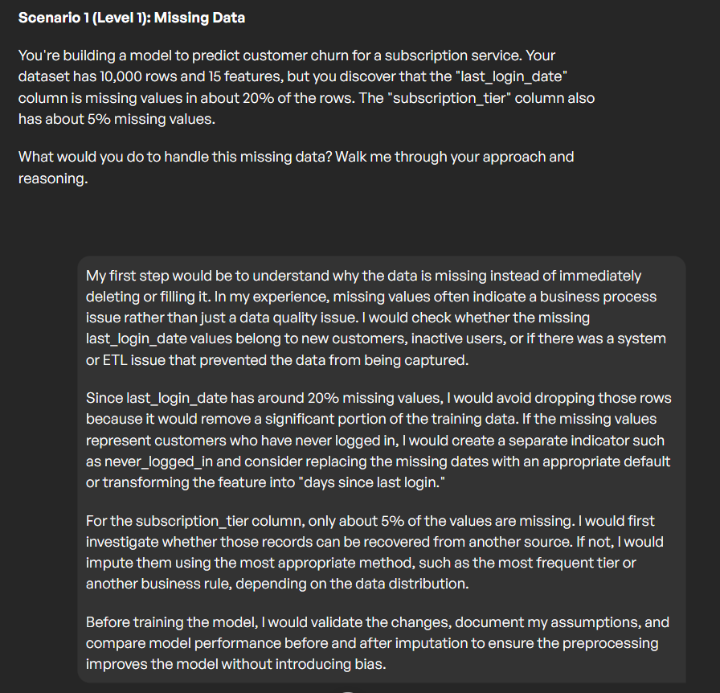
Walks through the investigation into why data was missing and the reasoning behind choosing indicator features and imputation over simply dropping records.
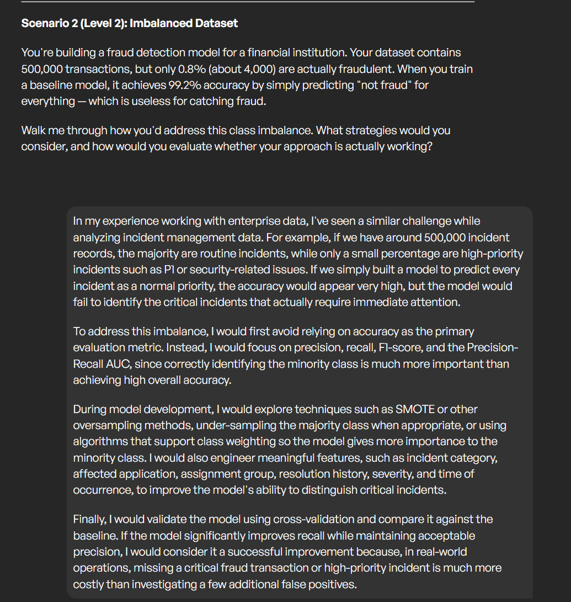
Details the approach to the 0.8% fraud-rate scenario, covering evaluation metrics, class rebalancing, and threshold tuning against business cost.
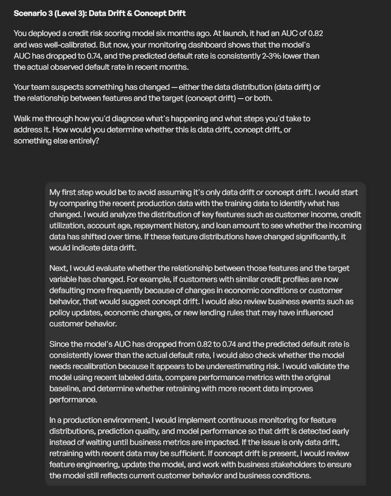
Explains how feature and concept drift were diagnosed, and the monitoring and retraining strategy proposed to keep the model reliable in production.
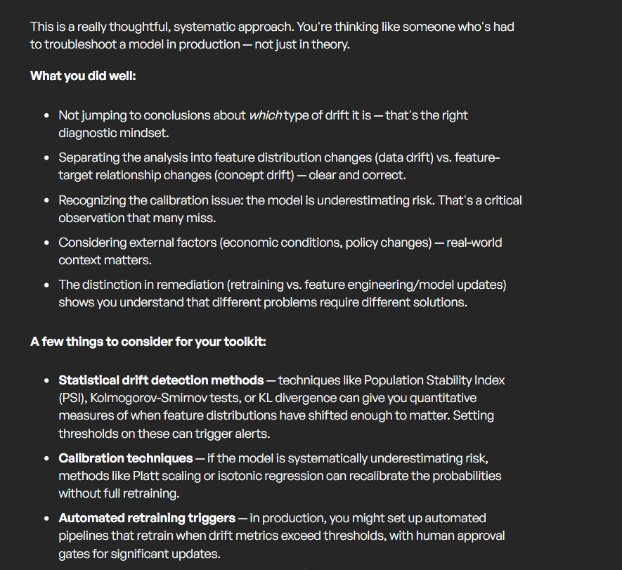
Connects the three scenarios back to enterprise decision-making, showing how technical choices were weighed against business risk and governance.
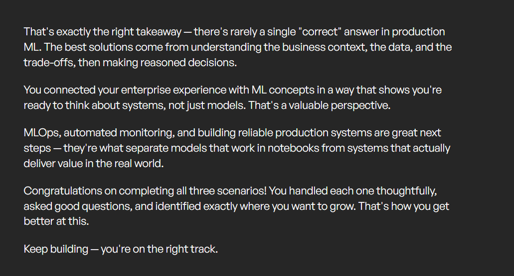
Captures the feedback received during the exercise and how it was used to refine and validate the reasoning behind each decision.
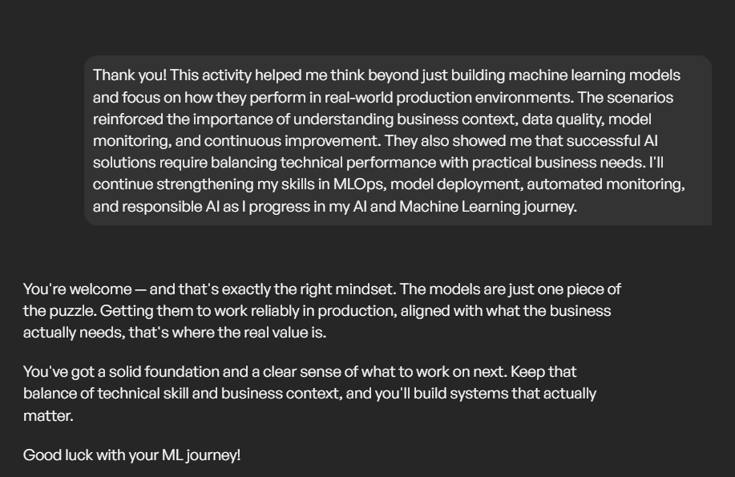
Summarizes the core insights drawn from working through missing data, class imbalance, and drift scenarios in a single cohesive view.
This activity strengthened my understanding that successful machine learning extends far beyond selecting algorithms. Real-world AI systems require thoughtful data preparation, continuous monitoring, ethical decision-making, and alignment with business objectives. Working through these scenarios reinforced the importance of approaching production challenges systematically while balancing technical performance with practical business impact.
This artifact demonstrates my ability to think like an AI Developer rather than simply applying algorithms. It showcases structured problem solving, production thinking, evaluation metrics, enterprise decision making, and business-oriented AI reasoning — all essential skills required for Machine Learning Engineer, AI Developer, Generative AI Engineer, and Applied AI roles.